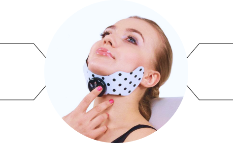
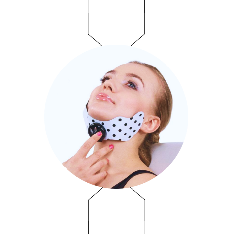

Миостимулятор Face Shaper
Эффективное и недорогое средство
для борьбы с провисающим подбородком
Эффективность аппарата проверена многими женщинами, достаточно посмотреть отзывыв интернете, чтобы убедиться в этом
Тренажер легок в применении и не требует от вас усилий, можно параллельно заниматься другими домашними делами


Доступная цена по сравнению с другими процедурами для подтяжки мышц подбородка. Аппарат можно использовать неограниченно
Доставка по России всего 7 рабочих дней, отсутствие предоплаты - вы оплачиваете товар полностью при получении.